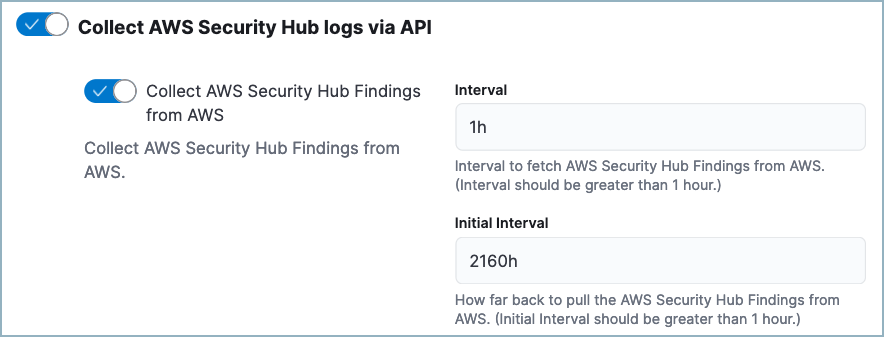

Ingest AWS Security Hub data
editIn order to enrich your Elastic Security workflows with third-party cloud security posture data collected by AWS Security Hub:
- Follow the steps to set up the AWS Security Hub integration.
- Make sure the integration version is at least 2.31.1.
-
Ensure you have
readprivileges for thesecurity_solution-*.misconfiguration_latestindex. -
While configuring the AWS Security Hub integration, turn on Collect AWS Security Hub Findings from AWS. We recommend you also set the Initial Interval value to
2160h(equivalent to 90 days) to ingest existing logs.

After you’ve completed these steps, AWS Security Hub data will appear on the Misconfigurations tab of the Findings page.
Any available findings data will also appear in the entity details flyouts for related alerts. If alerts are present for a user or host that has findings data from AWS Security Hub, the findings will appear on the users, and hosts flyouts.